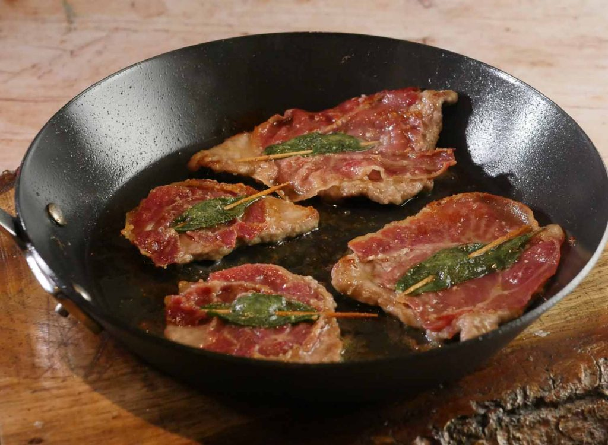

Veal Saltimbocca

Description
Veal Saltimbocca is one of the best classic Italian dishes. This simple recipe from
the Talisman Italian Cook Book gives you all the information you
need to cook this classic dish like a pro. Serves 6.
Ingredients
- 2 pounds veal cutlets, sliced very thin (Italian style!)
- 1 teaspoon sage
- 1/4 pound prosciutto or ham, sliced thin
- 3 tablespoons butter salt and pepper
- 2 tablespoons water
Steps
- Cut veal cutlets into pieces about 5 inches square.
- On each piece sprinkle a little of the sage and place a slice of prosciutto or ham on top. Keep the prosciutto or ham in place on veal with a toothpick.
- Melt 2 tablespoons butter in frying pan and place meat in it. Sprinkle with salt and pepper.
- Cook over a high fire for a few minutess on each side until the veal is well browned.
- Place the slices of cooked meat on a serving dish with prosciutto or ham facing up.
- Add water to contents of frying pan and scrape bottom well.
- Add rest of butter and mix well over low fire. Pour gravy over meat.